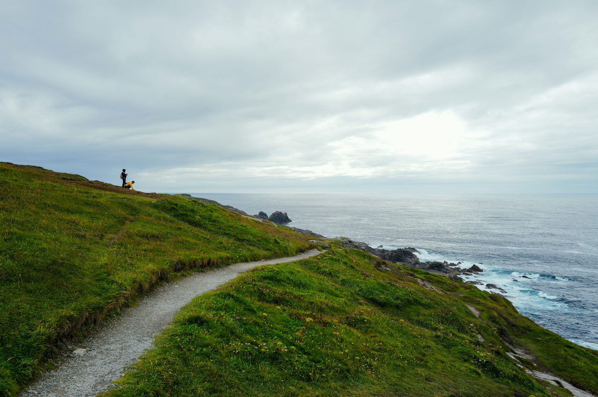

Cabo da Roca · Sintra
Hike the edge of Europe
A guided coastal walk from Cabo da Roca, the westernmost point of mainland Europe. Wild cliffs, hidden beaches and nothing but the Atlantic to the west.
- Duration
- 4 hours
- Distance
- 10 km
- Level
- Beginner
- Min. age
- 12 years
- Group
- 2 to 8

The activity
Cabo da Roca is where the continent ends: a granite headland 140 m above the ocean, inside the Sintra-Cascais Natural Park. From the lighthouse we head out along the cliff paths, away from the crowds.
The route takes in viewpoints over Praia da Ursa, one of the wildest beaches in Portugal, with its sea stacks rising out of the surf, and loops back through the village of Azóia and the low coastal scrub.
Your guide picks the route and timing for the wind and the weather, and tells you about the coast's geology, plants and history along the way. No technical gear needed: just good shoes and a normal level of fitness.
Included
- Guide with you the whole time
- Route planning and timing for the weather
- Activity insurance
Prices
| Shared group | €40 |
|---|---|
| Private, 2 people (each) | €40 |
| Private, each extra person | €30 |
| Solo private (total) | €80 |
| Transfer from Lisbon, round trip | +€20 |
| Full day or a bigger route, planned for you | On request |
Minimum 2 participants per departure. Want a full day? We can plan a longer hike on demand, priced for your group. The cliffs can be very windy: we adapt the route or reschedule.
The plan
- MeetWelcome and a short briefing at the Cabo da Roca lighthouse.
- Along the cliffsCoastal paths north, with the open Atlantic beside you.
- Praia da UrsaViewpoints over the sea stacks, with a snack stop.
- Back via AzóiaA loop back through the village and the coastal scrub.
- FinishBack at the lighthouse after about 4 hours.
What to bring
- Shoes: trail or walking shoes with good grip. Some paths are sandy and steep.
- Clothes: comfortable layers and a windproof jacket, even in summer.
- Water: 1.5 L and a snack.
- Sun: sunscreen, sunglasses and a cap.
- Backpack: a small one.
Book a trip
Tell us the date and how many of you there are. We reply within 24 hours with availability and the final price.
Email: hello@freesummitpt.com
Instagram: @freesummitpt